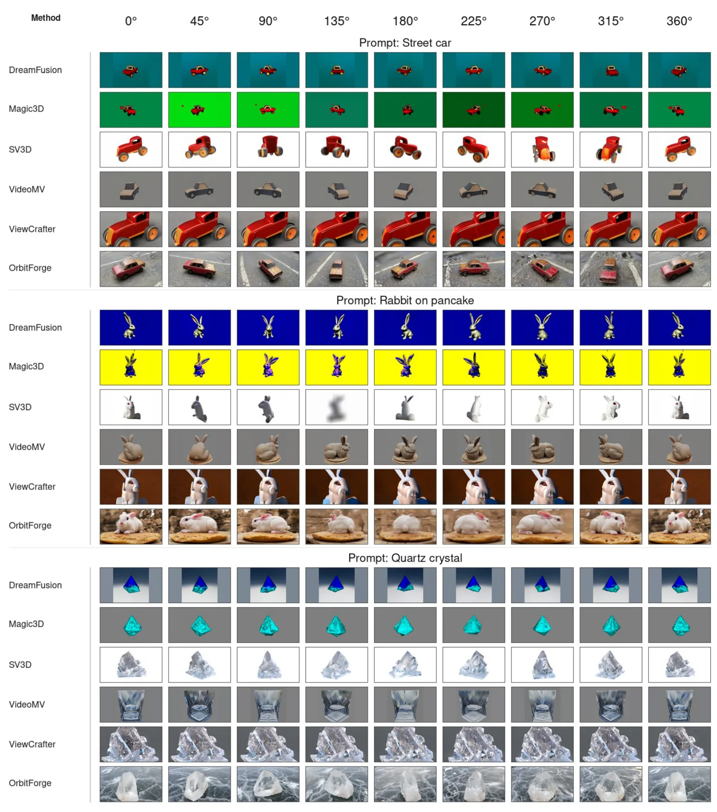
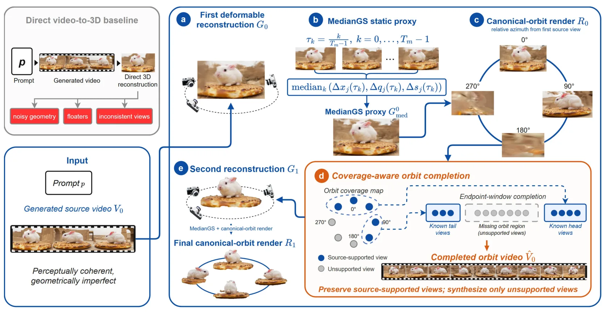
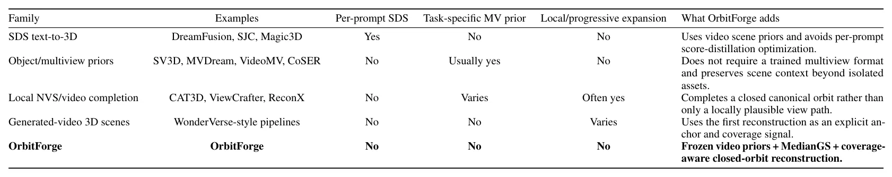
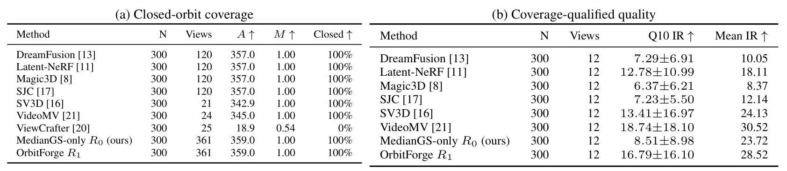

OrbitForge：重建锚定视频合成的文本到 3D 场景生成OrbitForge: Text-to-3D Scene Generation via Reconstruction-Anchored Video Synthesis
与文本到 3D、3DGS 场景生成和合成数据构建相关；重建作为几何锚的设计有启发，需关注每 prompt 优化成本和复杂场景一致性。
一句话工作总结
用初始 3DGS 重建检测文本生成视频的缺失视角，再定向补全并重建成闭环 orbit 3DGS 场景。
摘要
通用文本到视频模型具有开放世界场景先验，但直接生成的视频通常相机控制困难、视角覆盖不足且帧间不一致。OrbitForge 使用冻结视频先验和逐 prompt 的 Gaussian Splatting 重建优化，将单个文本生成视频转换为标准闭环轨道 3DGS 场景。流程先从第一段生成视频中通过 DeformableGS 和鲁棒 MedianGS 得到初始重建，再按规定 orbit 渲染检测缺失视角，只让 T2V 模型补全缺失部分，最后重建完整 orbit。该方法无需多视角微调或 score-distillation 优化，并提出 coverage-aware evaluation 以避免只奖励局部平滑。
Generic text-to-video models can be used as rich open-world scene priors. Despite the high quality of today's generated videos, they do not directly yield reliable 3D assets: camera motion is difficult to control, view coverage is partial, and frames often contain inconsistencies across time. We introduce OrbitForge, an adapter built from frozen video priors and per-prompt Gaussian Splatting reconstruction optimization that converts a single text-generated video into a canonical closed-orbit 3D Gaussian Splatting scene. We use 3D reconstruction as an anchor to improve the 3D consistency of the generated video. We obtain a preliminary 3D reconstruction from a first generated video via Deformable Gaussian Splatting with a robust MedianGS proxy. We render views from a prescribed orbit to detect missing viewpoints. OrbitForge uses the text-to-video model to complete only the missing views, and reconstructs the completed orbit into a final Gaussian Splatting scene. This design requires no task-specific video or multiview fine-tuning, avoids per-prompt score-distillation optimization, and does not progressively generate views one step at a time. We further argue that this setting demands coverage-aware evaluation: local smoothness alone rewards methods that never attempt a full orbit. On a frozen 300-prompt T3Bench-derived audit, OrbitForge reconstruction attains a 359.0-degree measured median span, raises originally unsupported-bin Q10 ImageReward from 8.07 to 16.36 relative to MedianGS-only reconstruction, while remaining competitive with VideoMV on the coverage-quality.
中文解读摘录
- 英文题名：Pocket-SLAM: Rendering-Area-Aware Pruning for Memory-Efficient 3DGS-SLAM
- 作者：Leshu Li, Jie Peng, Yang Zhao
- 类别/来源：cs.CV；comment: 2026 IEEE International Conference on Robotics and Automation (ICRA)；采集 score=17；阅读优先级=9.3/10。
- 一句话总结：用“对有效渲染区域的贡献”而不是单点 opacity/gradient 启发式来剪枝高斯，在保持定位/建图精度的同时显著降低 3DGS-SLAM 运行内存。
- 为什么值得看：这是今天最贴近 SLAM 主线的工作，直接面向大尺度/自动驾驶场景中 3DGS-SLAM 高斯点持续累积的问题；摘要报告 EuRoC/KITTI 上超过 60% 内存降低和 2 倍以上 FPS 提升，且给出了开源仓库地址。后续应复核其 pruning 触发策略、实时开销、对回环/长期地图维护的影响，以及和现有 keyframe/visibility 管理的关系。
- 标签：3DGS-SLAM、内存剪枝、实时建图、自动驾驶
- 链接：abs / PDF
图表/页面预览

{kind=link}

{kind=link}

{kind=link}

{kind=link}
